The operational amplifier is arguably the most useful single device in analog electronic circuitry. With only a handful of external components, it can be made to perform a wide variety of analog signal processing tasks. It is also quite affordable, most general-purpose amplifiers selling for under a dollar apiece. Modern designs have been engineered with durability in mind as well: several "op-amps" are manufactured that can sustain direct short-circuits on their outputs without damage.
One key to the usefulness of these little circuits is in the engineering principle of feedback, particularly negative feedback, which constitutes the foundation of almost all automatic control processes. The principles presented here in operational amplifier circuits, therefore, extend well beyond the immediate scope of electronics. It is well worth the electronics student's time to learn these principles and learn them well.
For ease of drawing complex circuit diagrams, electronic amplifiers are often symbolized by a simple triangle shape, where the internal components are not individually represented. This symbology is very handy for cases where an amplifier's construction is irrelevant to the greater function of the overall circuit, and it is worthy of familiarization:
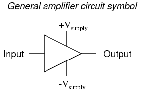
The +V and -V connections denote the positive and negative sides of the DC power supply, respectively. The input and output voltage connections are shown as single conductors, because it is assumed that all signal voltages are referenced to a common connection in the circuit called ground. Often (but not always!), one pole of the DC power supply, either positive or negative, is that ground reference point. A practical amplifier circuit (showing the input voltage source, load resistance, and power supply) might look like this:
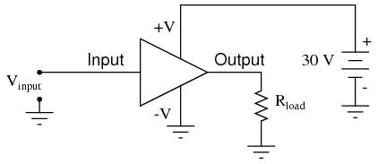
Without having to analyze the actual transistor design of the amplifier, you can readily discern the whole circuit's function: to take an input signal (Vin), amplify it, and drive a load resistance (Rload). To complete the above schematic, it would be good to specify the gains of that amplifier (AV, AI, AP) and the Q (bias) point for any needed mathematical analysis.
If it is necessary for an amplifier to be able to output true AC voltage (reversing polarity) to the load, a split DC power supply may be used, whereby the ground point is electrically "centered" between +V and -V. Sometimes the split power supply configuration is referred to as a dual power supply.
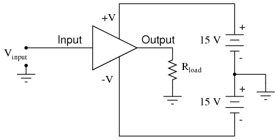
The amplifier is still being supplied with 30 volts overall, but with the split voltage DC power supply, the output voltage across the load resistor can now swing from a theoretical maximum of +15 volts to -15 volts, instead of +30 volts to 0 volts. This is an easy way to get true alternating current (AC) output from an amplifier without resorting to capacitive or inductive (transformer) coupling on the output. The peak-to-peak amplitude of this amplifier's output between cutoff and saturation remains unchanged.
By signifying a transistor amplifier within a larger circuit with a triangle symbol, we ease the task of studying and analyzing more complex amplifiers and circuits. One of these more complex amplifier types that we'll be studying is called the differential amplifier. Unlike normal amplifiers, which amplify a single input signal (often called single-ended amplifiers), differential amplifiers amplify the voltage difference between two input signals. Using the simplified triangle amplifier symbol, a differential amplifier looks like this:
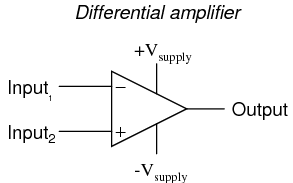
The two input leads can be seen on the left-hand side of the triangular amplifier symbol, the output lead on the right-hand side, and the +V and -V power supply leads on top and bottom. As with the other example, all voltages are referenced to the circuit's ground point. Notice that one input lead is marked with a (-) and the other is marked with a (+). Because a differential amplifier amplifies the difference in voltage between the two inputs, each input influences the output voltage in opposite ways. Consider the following table of input/output voltages for a differential amplifier with a voltage gain of 4:
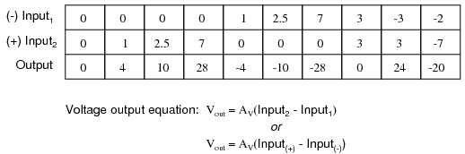
An increasingly positive voltage on the (+) input tends to drive the output voltage more positive, and an increasingly positive voltage on the (-) input tends to drive the output voltage more negative. Likewise, an increasingly negative voltage on the (+) input tends to drive the output negative as well, and an increasingly negative voltage on the (-) input does just the opposite. Because of this relationship between inputs and polarities, the (-) input is commonly referred to as the inverting input and the (+) as the noninverting input.
It may be helpful to think of a differential amplifier as a variable voltage source controlled by a sensitive voltmeter, as such:
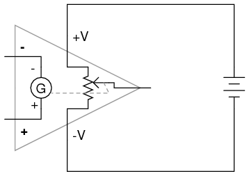
Bear in mind that the above illustration is only a model to aid in understanding the behavior of a differential amplifier. It is not a realistic schematic of its actual design. The "G" symbol represents a galvanometer, a sensitive voltmeter movement. The potentiometer connected between +V and -V provides a variable voltage at the output pin (with reference to one side of the DC power supply), that variable voltage set by the reading of the galvanometer. It must be understood that any load powered by the output of a differential amplifier gets its current from the DC power source (battery), not the input signal. The input signal (to the galvanometer) merely controls the output.
This concept may at first be confusing to students new to amplifiers. With all these polarities and polarity markings (- and +) around, its easy to get confused and not know what the output of a differential amplifier will be. To address this potential confusion, here's a simple rule to remember:
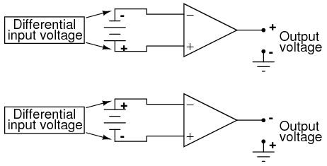
When the polarity of the differential voltage matches the markings for inverting and noninverting inputs, the output will be positive. When the polarity of the differential voltage clashes with the input markings, the output will be negative. This bears some similarity to the mathematical sign displayed by digital voltmeters based on input voltage polarity. The red test lead of the voltmeter (often called the "positive" lead because of the color red's popular association with the positive side of a power supply in electronic wiring) is more positive than the black, the meter will display a positive voltage figure, and vice versa:
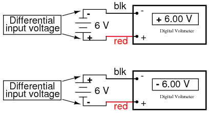
Just as a voltmeter will only display the voltage between its two test leads, an ideal differential amplifier only amplifies the potential difference between its two input connections, not the voltage between any one of those connections and ground. The output polarity of a differential amplifier, just like the signed indication of a digital voltmeter, depends on the relative polarities of the differential voltage between the two input connections.
If the input voltages to this amplifier represented mathematical quantities (as is the case within analog computer circuitry), or physical process measurements (as is the case within analog electronic instrumentation circuitry), you can see how a device such as a differential amplifier could be very useful. We could use it to compare two quantities to see which is greater (by the polarity of the output voltage), or perhaps we could compare the difference between two quantities (such as the level of liquid in two tanks) and flag an alarm (based on the absolute value of the amplifier output) if the difference became too great. In basic automatic control circuitry, the quantity being controlled (called the process variable) is compared with a target value (called the setpoint), and decisions are made as to how to act based on the discrepancy between these two values. The first step in electronically controlling such a scheme is to amplify the difference between the process variable and the setpoint with a differential amplifier. In simple controller designs, the output of this differential amplifier can be directly utilized to drive the final control element (such as a valve) and keep the process reasonably close to setpoint.
Long before the advent of digital electronic technology, computers were built to electronically perform calculations by employing voltages and currents to represent numerical quantities. This was especially useful for the simulation of physical processes. A variable voltage, for instance, might represent velocity or force in a physical system. Through the use of resistive voltage dividers and voltage amplifiers, the mathematical operations of division and multiplication could be easily performed on these signals.
The reactive properties of capacitors and inductors lend themselves well to the simulation of variables related by calculus functions. Remember how the current through a capacitor was a function of the voltage's rate of change, and how that rate of change was designated in calculus as the derivative? Well, if voltage across a capacitor were made to represent the velocity of an object, the current through the capacitor would represent the force required to accelerate or decelerate that object, the capacitor's capacitance representing the object's mass:
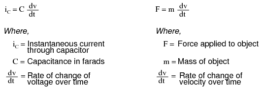
This analog electronic computation of the calculus derivative function is technically known as differentiation, and it is a natural function of a capacitor's current in relation to the voltage applied across it. Note that this circuit requires no "programming" to perform this relatively advanced mathematical function as a digital computer would.
Electronic circuits are very easy and inexpensive to create compared to complex physical systems, so this kind of analog electronic simulation was widely used in the research and development of mechanical systems. For realistic simulation, though, amplifier circuits of high accuracy and easy configurability were needed in these early computers.
It was found in the course of analog computer design that differential amplifiers with extremely high voltage gains met these requirements of accuracy and configurability better than single-ended amplifiers with custom-designed gains. Using simple components connected to the inputs and output of the high-gain differential amplifier, virtually any gain and any function could be obtained from the circuit, overall, without adjusting or modifying the internal circuitry of the amplifier itself. These high-gain differential amplifiers came to be known as operational amplifiers, or op-amps, because of their application in analog computers' mathematical operations.
Modern op-amps, like the popular model 741, are high-performance, inexpensive integrated circuits. Their input impedances are quite high, the inputs drawing currents in the range of half a microamp (maximum) for the 741, and far less for op-amps utilizing field-effect input transistors. Output impedance is typically quite low, about 75 Ω for the model 741, and many models have built-in output short circuit protection, meaning that their outputs can be directly shorted to ground without causing harm to the internal circuitry. With direct coupling between op-amps' internal transistor stages, they can amplify DC signals just as well as AC (up to certain maximum voltage-risetime limits). It would cost far more in money and time to design a comparable discrete-transistor amplifier circuit to match that kind of performance, unless high power capability was required. For these reasons, op-amps have all but obsoleted discrete-transistor signal amplifiers in many applications.
The following diagram shows the pin connections for single op-amps (741 included) when housed in an 8-pin DIP (Dual Inline Package) integrated circuit:
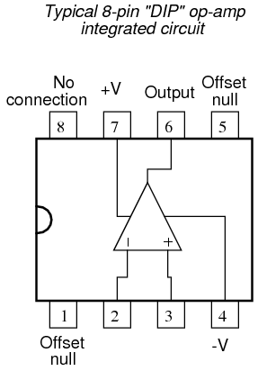
Some models of op-amp come two to a package, including the popular models TL082 and 1458. These are called "dual" units, and are typically housed in an 8-pin DIP package as well, with the following pin connections:
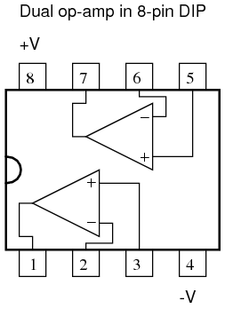
Operational amplifiers are also available four to a package, usually in 14-pin DIP arrangements. Unfortunately, pin assignments aren't as standard for these "quad" op-amps as they are for the "dual" or single units. Consult the manufacturer datasheet(s) for details.
Practical operational amplifier voltage gains are in the range of 200,000 or more, which makes them almost useless as an analog differential amplifier by themselves. For an op-amp with a voltage gain (AV) of 200,000 and a maximum output voltage swing of +15V/-15V, all it would take is a differential input voltage of 75 µV (microvolts) to drive it to saturation or cutoff! Before we take a look at how external components are used to bring the gain down to a reasonable level, let's investigate applications for the "bare" op-amp by itself.
One application is called the comparator. For all practical purposes, we can say that the output of an op-amp will be saturated fully positive if the (+) input is more positive than the (-) input, and saturated fully negative if the (+) input is less positive than the (-) input. In other words, an op-amp's extremely high voltage gain makes it useful as a device to compare two voltages and change output voltage states when one input exceeds the other in magnitude.
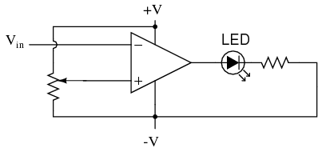
In the above circuit, we have an op-amp connected as a comparator, comparing the input voltage with a reference voltage set by the potentiometer (R1). If Vin drops below the voltage set by R1, the op-amp's output will saturate to +V, thereby lighting up the LED. Otherwise, if Vin is above the reference voltage, the LED will remain off. If Vin is a voltage signal produced by a measuring instrument, this comparator circuit could function as a "low" alarm, with the trip-point set by R1. Instead of an LED, the op-amp output could drive a relay, a transistor, an SCR, or any other device capable of switching power to a load such as a solenoid valve, to take action in the event of a low alarm.
Another application for the comparator circuit shown is a square-wave converter. Suppose that the input voltage applied to the inverting (-) input was an AC sine wave rather than a stable DC voltage. In that case, the output voltage would transition between opposing states of saturation whenever the input voltage was equal to the reference voltage produced by the potentiometer. The result would be a square wave:
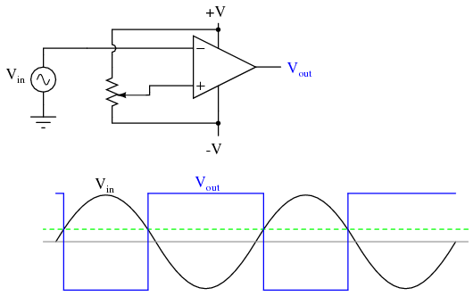
Adjustments to the potentiometer setting would change the reference voltage applied to the noninverting (+) input, which would change the points at which the sine wave would cross, changing the on/off times, or duty cycle of the square wave:
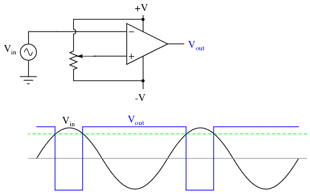
It should be evident that the AC input voltage would not have to be a sine wave in particular for this circuit to perform the same function. The input voltage could be a triangle wave, sawtooth wave, or any other sort of wave that ramped smoothly from positive to negative to positive again. This sort of comparator circuit is very useful for creating square waves of varying duty cycle. This technique is sometimes referred to as pulse-width modulation, or PWM (varying, or modulating a waveform according to a controlling signal, in this case the signal produced by the potentiometer).
Another comparator application is that of the bargraph driver. If we had several op-amps connected as comparators, each with its own reference voltage connected to the inverting input, but each one monitoring the same voltage signal on their noninverting inputs, we could build a bargraph-style meter such as what is commonly seen on the face of stereo tuners and graphic equalizers. As the signal voltage (representing radio signal strength or audio sound level) increased, each comparator would "turn on" in sequence and send power to its respective LED. With each comparator switching "on" at a different level of audio sound, the number of LED's illuminated would indicate how strong the signal was.
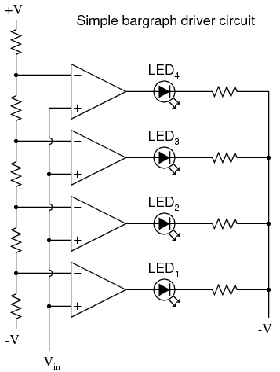
In the circuit shown above, LED1 would be the first to light up as the input voltage increased in a positive direction. As the input voltage continued to increase, the other LED's would illuminate in succession, until all were lit.
This very same technology is used in some analog-to-digital signal converters, namely the flash converter, to translate an analog signal quantity into a series of on/off voltages representing a digital number.
If we connect the output of an op-amp to its inverting input and apply a voltage signal to the noninverting input, we find that the output voltage of the op-amp closely follows that input voltage (I've neglected to draw in the power supply, +V/-V wires, and ground symbol for simplicity):
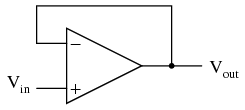
As Vin increases, Vout will increase in accordance with the differential gain. However, as Vout increases, that output voltage is fed back to the inverting input, thereby acting to decrease the voltage differential between inputs, which acts to bring the output down. What will happen for any given voltage input is that the op-amp will output a voltage very nearly equal to Vin, but just low enough so that there's enough voltage difference left between Vin and the (-) input to be amplified to generate the output voltage.
The circuit will quickly reach a point of stability (known as equilibrium in physics), where the output voltage is just the right amount to maintain the right amount of differential, which in turn produces the right amount of output voltage. Taking the op-amp's output voltage and coupling it to the inverting input is a technique known as negative feedback, and it is the key to having a self-stabilizing system (this is true not only of op-amps, but of any dynamic system in general). This stability gives the op-amp the capacity to work in its linear (active) mode, as opposed to merely being saturated fully "on" or "off" as it was when used as a comparator, with no feedback at all.
Because the op-amp's gain is so high, the voltage on the inverting input can be maintained almost equal to Vin. Let's say that our op-amp has a differential voltage gain of 200,000. If Vin equals 6 volts, the output voltage will be 5.999970000149999 volts. This creates just enough differential voltage (6 volts - 5.999970000149999 volts = 29.99985 µV) to cause 5.999970000149999 volts to be manifested at the output terminal, and the system holds there in balance. As you can see, 29.99985 µV is not a lot of differential, so for practical calculations, we can assume that the differential voltage between the two input wires is held by negative feedback exactly at 0 volts.
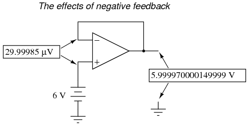
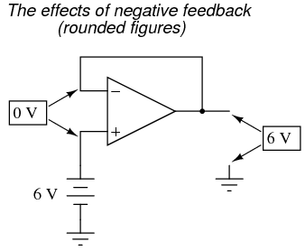
One great advantage to using an op-amp with negative feedback is that the actual voltage gain of the op-amp doesn't matter, so long as its very large. If the op-amp's differential gain were 250,000 instead of 200,000, all it would mean is that the output voltage would hold just a little closer to Vin (less differential voltage needed between inputs to generate the required output). In the circuit just illustrated, the output voltage would still be (for all practical purposes) equal to the non-inverting input voltage. Op-amp gains, therefore, do not have to be precisely set by the factory in order for the circuit designer to build an amplifier circuit with precise gain. Negative feedback makes the system self-correcting. The above circuit as a whole will simply follow the input voltage with a stable gain of 1.
Going back to our differential amplifier model, we can think of the operational amplifier as being a variable voltage source controlled by an extremely sensitive null detector, the kind of meter movement or other sensitive measurement device used in bridge circuits to detect a condition of balance (zero volts). The "potentiometer" inside the op-amp creating the variable voltage will move to whatever position it must to "balance" the inverting and noninverting input voltages so that the "null detector" has zero voltage across it:
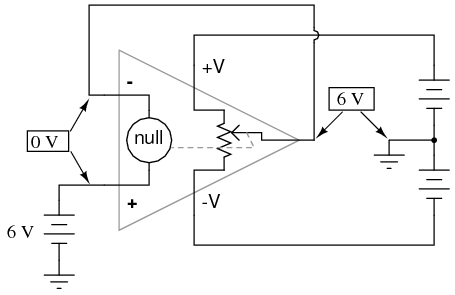
As the "potentiometer" will move to provide an output voltage necessary to satisfy the "null detector" at an "indication" of zero volts, the output voltage becomes equal to the input voltage: in this case, 6 volts. If the input voltage changes at all, the "potentiometer" inside the op-amp will change position to hold the "null detector" in balance (indicating zero volts), resulting in an output voltage approximately equal to the input voltage at all times.
This will hold true within the range of voltages that the op-amp can output. With a power supply of +15V/-15V, and an ideal amplifier that can swing its output voltage just as far, it will faithfully "follow" the input voltage between the limits of +15 volts and -15 volts. For this reason, the above circuit is known as a voltage follower. Like its one-transistor counterpart, the common-collector ("emitter-follower") amplifier, it has a voltage gain of 1, a high input impedance, a low output impedance, and a high current gain. Voltage followers are also known as voltage buffers, and are used to boost the current-sourcing ability of voltage signals too weak (too high of source impedance) to directly drive a load. The op-amp model shown in the last illustration depicts how the output voltage is essentially isolated from the input voltage, so that current on the output pin is not supplied by the input voltage source at all, but rather from the power supply powering the op-amp.
It should be mentioned that many op-amps cannot swing their output voltages exactly to +V/-V power supply rail voltages. The model 741 is one of those that cannot: when saturated, its output voltage peaks within about one volt of the +V power supply voltage and within about 2 volts of the -V power supply voltage. Therefore, with a split power supply of +15/-15 volts, a 741 op-amp's output may go as high as +14 volts or as low as -13 volts (approximately), but no further. This is due to its bipolar transistor design. These two voltage limits are known as the positive saturation voltage and negative saturation voltage, respectively. Other op-amps, such as the model 3130 with field-effect transistors in the final output stage, have the ability to swing their output voltages within millivolts of either power supply rail voltage. Consequently, their positive and negative saturation voltages are practically equal to the supply voltages.
If we add a voltage divider to the negative feedback wiring so that only a fraction of the output voltage is fed back to the inverting input instead of the full amount, the output voltage will be a multiple of the input voltage (please bear in mind that the power supply connections to the op-amp have been omitted once again for simplicity's sake):
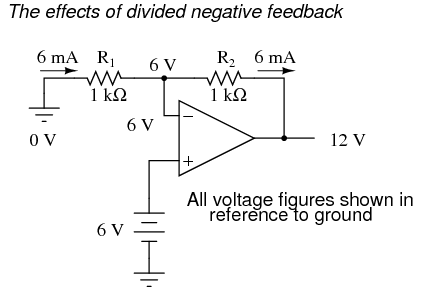
If R1 and R2 are both equal and Vin is 6 volts, the op-amp will output whatever voltage is needed to drop 6 volts across R1 (to make the inverting input voltage equal to 6 volts, as well, keeping the voltage difference between the two inputs equal to zero). With the 2:1 voltage divider of R1 and R2, this will take 12 volts at the output of the op-amp to accomplish.
Another way of analyzing this circuit is to start by calculating the magnitude and direction of current through R1, knowing the voltage on either side (and therefore, by subtraction, the voltage across R1), and R1's resistance. Since the left-hand side of R1 is connected to ground (0 volts) and the right-hand side is at a potential of 6 volts (due to the negative feedback holding that point equal to Vin), we can see that we have 6 volts across R1. This gives us 6 mA of current through R1 from left to right. Because we know that both inputs of the op-amp have extremely high impedance, we can safely assume they won't add or subtract any current through the divider. In other words, we can treat R1 and R2 as being in series with each other: all of the electrons flowing through R1 must flow through R2. Knowing the current through R2 and the resistance of R2, we can calculate the voltage across R2 (6 volts), and its polarity. Counting up voltages from ground (0 volts) to the right-hand side of R2, we arrive at 12 volts on the output.
Upon examining the last illustration, one might wonder, "where does that 6 mA of current go?" The last illustration doesn't show the entire current path, but in reality it comes from the negative side of the DC power supply, through ground, through R1, through R2, through the output pin of the op-amp, and then back to the positive side of the DC power supply through the output transistor(s) of the op-amp. Using the null detector/potentiometer model of the op-amp, the current path looks like this:
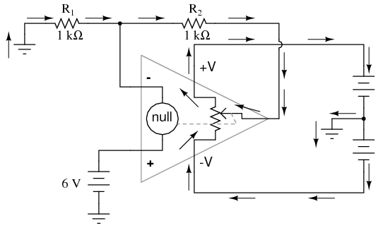
The 6 volt signal source does not have to supply any current for the circuit: it merely commands the op-amp to balance voltage between the inverting (-) and noninverting (+) input pins, and in so doing produce an output voltage that is twice the input due to the dividing effect of the two 1 kΩ resistors.
We can change the voltage gain of this circuit, overall, just by adjusting the values of R1 and R2 (changing the ratio of output voltage that is fed back to the inverting input). Gain can be calculated by the following formula:
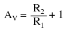
Note that the voltage gain for this design of amplifier circuit can never be less than 1. If we were to lower R2 to a value of zero ohms, our circuit would be essentially identical to the voltage follower, with the output directly connected to the inverting input. Since the voltage follower has a gain of 1, this sets the lower gain limit of the noninverting amplifier. However, the gain can be increased far beyond 1, by increasing R2 in proportion to R1.
Also note that the polarity of the output matches that of the input, just as with a voltage follower. A positive input voltage results in a positive output voltage, and vice versa (with respect to ground). For this reason, this circuit is referred to as a noninverting amplifier.
Just as with the voltage follower, we see that the differential gain of the op-amp is irrelevant, so long as its very high. The voltages and currents in this circuit would hardly change at all if the op-amp's voltage gain were 250,000 instead of 200,000. This stands as a stark contrast to single-transistor amplifier circuit designs, where the Beta of the individual transistor greatly influenced the overall gains of the amplifier. With negative feedback, we have a self-correcting system that amplifies voltage according to the ratios set by the feedback resistors, not the gains internal to the op-amp.
Let's see what happens if we retain negative feedback through a voltage divider, but apply the input voltage at a different location:
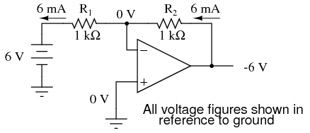
By grounding the noninverting input, the negative feedback from the output seeks to hold the inverting input's voltage at 0 volts, as well. For this reason, the inverting input is referred to in this circuit as a virtual ground, being held at ground potential (0 volts) by the feedback, yet not directly connected to (electrically common with) ground. The input voltage this time is applied to the left-hand end of the voltage divider (R1 = R2 = 1 kΩ again), so the output voltage must swing to -6 volts in order to balance the middle at ground potential (0 volts). Using the same techniques as with the noninverting amplifier, we can analyze this circuit's operation by determining current magnitudes and directions, starting with R1, and continuing on to determining the output voltage.
We can change the overall voltage gain of this circuit, overall, just by adjusting the values of R1 and R2 (changing the ratio of output voltage that is fed back to the inverting input). Gain can be calculated by the following formula:
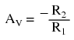
Note that this circuit's voltage gain can be less than 1, depending solely on the ratio of R2 to R1. Also note that the output voltage is always the opposite polarity of the input voltage. A positive input voltage results in a negative output voltage, and vice versa (with respect to ground). For this reason, this circuit is referred to as an inverting amplifier. Sometimes, the gain formula contains a negative sign (before the R2/R1 fraction) to reflect this reversal of polarities.
These two amplifier circuits we've just investigated serve the purpose of multiplying or dividing the magnitude of the input voltage signal. This is exactly how the mathematical operations of multiplication and division are typically handled in analog computer circuitry.
A helpful analogy for understanding divided feedback amplifier circuits is that of a mechanical lever, with relative motion of the lever's ends representing change in input and output voltages, and the fulcrum (pivot point) representing the location of the ground point, real or virtual.
Take for example the following noninverting op-amp circuit. We know from the prior section that the voltage gain of a noninverting amplifier configuration can never be less than unity (1). If we draw a lever diagram next to the amplifier schematic, with the distance between fulcrum and lever ends representative of resistor values, the motion of the lever will signify changes in voltage at the input and output terminals of the amplifier:
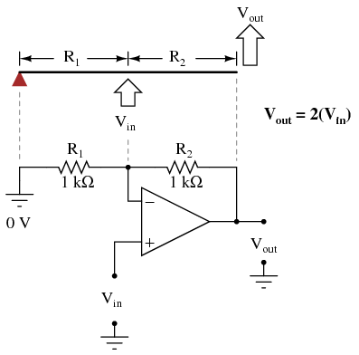
Physicists call this type of lever, with the input force (effort) applied between the fulcrum and output (load), a third-class lever. It is characterized by an output displacement (motion) at least as large than the input displacement -- a "gain" of at least 1 -- and in the same direction. Applying a positive input voltage to this op-amp circuit is analogous to displacing the "input" point on the lever upward:
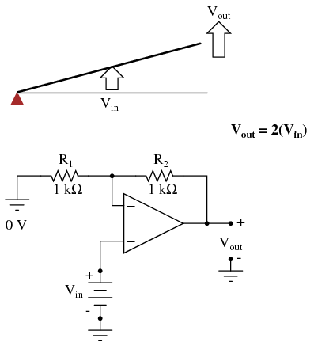
Due to the displacement-amplifying characteristics of the lever, the "output" point will move twice as far as the "input" point, and in the same direction. In the electronic circuit, the output voltage will equal twice the input, with the same polarity. Applying a negative input voltage is analogous to moving the lever downward from its level "zero" position, resulting in an amplified output displacement that is also negative:
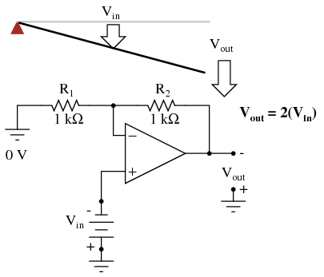
If we alter the resistor ratio R2/R1, we change the gain of the op-amp circuit. In lever terms, this means moving the input point in relation to the fulcrum and lever end, which similarly changes the displacement "gain" of the machine:
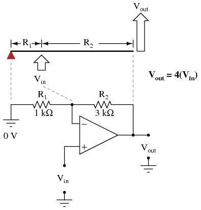
Now, any input signal will become amplified by a factor of four instead of by a factor of two:
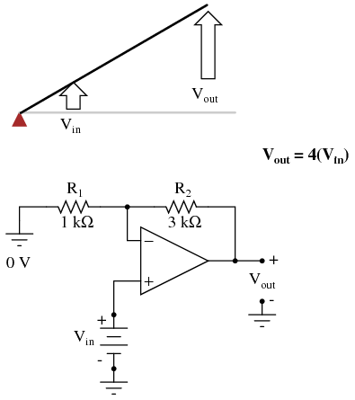
Inverting op-amp circuits may be modeled using the lever analogy as well. With the inverting configuration, the ground point of the feedback voltage divider is the op-amp's inverting input with the input to the left and the output to the right. This is mechanically equivalent to a first-class lever, where the input force (effort) is on the opposite side of the fulcrum from the output (load):
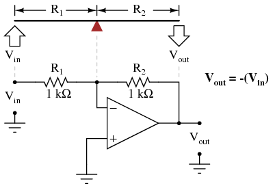
With equal-value resistors (equal-lengths of lever on each side of the fulcrum), the output voltage (displacement) will be equal in magnitude to the input voltage (displacement), but of the opposite polarity (direction). A positive input results in a negative output:
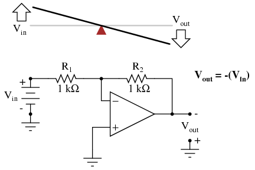
Changing the resistor ratio R2/R1 changes the gain of the amplifier circuit, just as changing the fulcrum position on the lever changes its mechanical displacement "gain." Consider the following example, where R2 is made twice as large as R1:
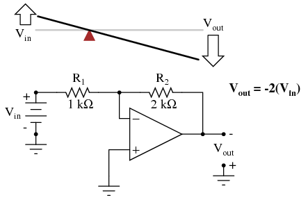
With the inverting amplifier configuration, though, gains of less than 1 are possible, just as with first-class levers. Reversing R2 and R1 values is analogous to moving the fulcrum to its complementary position on the lever: one-third of the way from the output end. There, the output displacement will be one-half the input displacement:
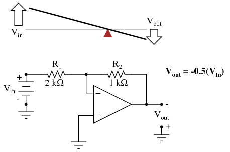
In instrumentation circuitry, DC signals are often used as analog representations of physical measurements such as temperature, pressure, flow, weight, and motion. Most commonly, DC current signals are used in preference to DC voltage signals, because current signals are exactly equal in magnitude throughout the series circuit loop carrying current from the source (measuring device) to the load (indicator, recorder, or controller), whereas voltage signals in a parallel circuit may vary from one end to the other due to resistive wire losses. Furthermore, current-sensing instruments typically have low impedances (while voltage-sensing instruments have high impedances), which gives current-sensing instruments greater electrical noise immunity.
In order to use current as an analog representation of a physical quantity, we have to have some way of generating a precise amount of current within the signal circuit. But how do we generate a precise current signal when we might not know the resistance of the loop? The answer is to use an amplifier designed to hold current to a prescribed value, applying as much or as little voltage as necessary to the load circuit to maintain that value. Such an amplifier performs the function of a current source. An op-amp with negative feedback is a perfect candidate for such a task:
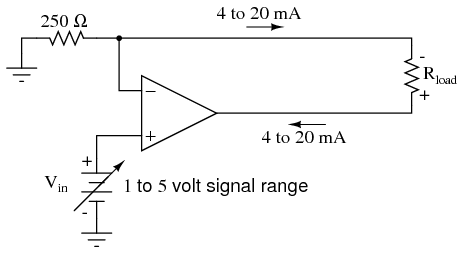
The input voltage to this circuit is assumed to be coming from some type of physical transducer/amplifier arrangement, calibrated to produce 1 volt at 0 percent of physical measurement, and 5 volts at 100 percent of physical measurement. The standard analog current signal range is 4 mA to 20 mA, signifying 0% to 100% of measurement range, respectively. At 5 volts input, the 250 Ω (precision) resistor will have 5 volts applied across it, resulting in 20 mA of current in the large loop circuit (with Rload). It does not matter what resistance value Rload is, or how much wire resistance is present in that large loop, so long as the op-amp has a high enough power supply voltage to output the voltage necessary to get 20 mA flowing through Rload. The 250 Ω resistor establishes the relationship between input voltage and output current, in this case creating the equivalence of 1-5 V in / 4-20 mA out. If we were converting the 1-5 volt input signal to a 10-50 mA output signal (an older, obsolete instrumentation standard for industry), we'd use a 100 Ω precision resistor instead.
Another name for this circuit is transconductance amplifier. In electronics, transconductance is the mathematical ratio of current change divided by voltage change (ΔI / Δ V), and it is measured in the unit of Siemens, the same unit used to express conductance (the mathematical reciprocal of resistance: current/voltage). In this circuit, the transconductance ratio is fixed by the value of the 250 Ω resistor, giving a linear current-out/voltage-in relationship.
If we take three equal resistors and connect one end of each to a common point, then apply three input voltages (one to each of the resistors' free ends), the voltage seen at the common point will be the mathematical average of the three.
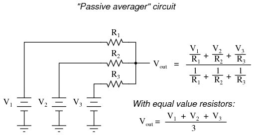
This circuit is really nothing more than a practical application of Millman's Theorem:
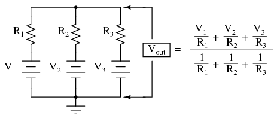
This circuit is commonly known as a passive averager, because it generates an average voltage with non-amplifying components. Passive simply means that it is an unamplified circuit. The large equation to the right of the averager circuit comes from Millman's Theorem, which describes the voltage produced by multiple voltage sources connected together through individual resistances. Since the three resistors in the averager circuit are equal to each other, we can simplify Millman's formula by writing R1, R2, and R3 simply as R (one, equal resistance instead of three individual resistances):
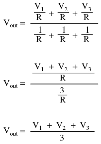
If we take a passive averager and use it to connect three input voltages into an op-amp amplifier circuit with a gain of 3, we can turn this averaging function into an addition function. The result is called a noninverting summer circuit:
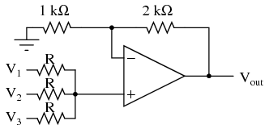
With a voltage divider composed of a 2 kΩ / 1 kΩ combination, the noninverting amplifier circuit will have a voltage gain of 3. By taking the voltage from the passive averager, which is the sum of V1, V2, and V3 divided by 3, and multiplying that average by 3, we arrive at an output voltage equal to the sum of V1, V2, and V3:
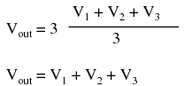
Much the same can be done with an inverting op-amp amplifier, using a passive averager as part of the voltage divider feedback circuit. The result is called an inverting summer circuit:
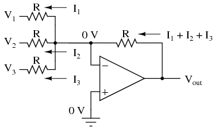
Now, with the right-hand sides of the three averaging resistors connected to the virtual ground point of the op-amp's inverting input, Millman's Theorem no longer directly applies as it did before. The voltage at the virtual ground is now held at 0 volts by the op-amp's negative feedback, whereas before it was free to float to the average value of V1, V2, and V3. However, with all resistor values equal to each other, the currents through each of the three resistors will be proportional to their respective input voltages. Since those three currents will add at the virtual ground node, the algebraic sum of those currents through the feedback resistor will produce a voltage at Vout equal to V1 + V2 + V3, except with reversed polarity. The reversal in polarity is what makes this circuit an inverting summer:
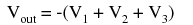
Summer (adder) circuits are quite useful in analog computer design, just as multiplier and divider circuits would be. Again, it is the extremely high differential gain of the op-amp which allows us to build these useful circuits with a bare minimum of components.
An op-amp with no feedback is already a differential amplifier, amplifying the voltage difference between the two inputs. However, its gain cannot be controlled, and it is generally too high to be of any practical use. So far, our application of negative feedback to op-amps has resulting in the practical loss of one of the inputs, the resulting amplifier only good for amplifying a single voltage signal input. With a little ingenuity, however, we can construct an op-amp circuit maintaining both voltage inputs, yet with a controlled gain set by external resistors.
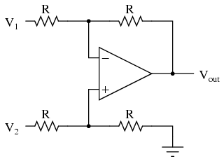
If all the resistor values are equal, this amplifier will have a differential voltage gain of 1. The analysis of this circuit is essentially the same as that of an inverting amplifier, except that the noninverting input (+) of the op-amp is at a voltage equal to a fraction of V2, rather than being connected directly to ground. As would stand to reason, V2 functions as the noninverting input and V1 functions as the inverting input of the final amplifier circuit. Therefore:
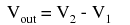
If we wanted to provide a differential gain of anything other than 1, we would have to adjust the resistances in both upper and lower voltage dividers, necessitating multiple resistor changes and balancing between the two dividers for symmetrical operation. This is not always practical, for obvious reasons.
Another limitation of this amplifier design is the fact that its input impedances are rather low compared to that of some other op-amp configurations, most notably the noninverting (single-ended input) amplifier. Each input voltage source has to drive current through a resistance, which constitutes far less impedance than the bare input of an op-amp alone. The solution to this problem, fortunately, is quite simple. All we need to do is "buffer" each input voltage signal through a voltage follower like this:
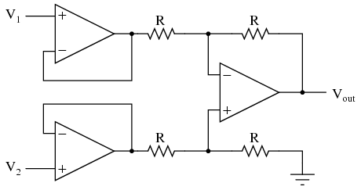
Now the V1 and V2 input lines are connected straight to the inputs of two voltage-follower op-amps, giving very high impedance. The two op-amps on the left now handle the driving of current through the resistors instead of letting the input voltage sources (whatever they may be) do it. The increased complexity to our circuit is minimal for a substantial benefit.
As suggested before, it is beneficial to be able to adjust the gain of the amplifier circuit without having to change more than one resistor value, as is necessary with the previous design of differential amplifier. The so-called instrumentation builds on the last version of differential amplifier to give us that capability:
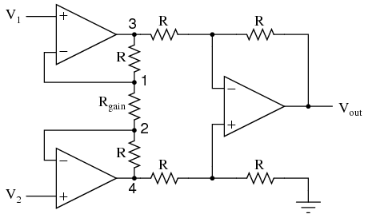
This intimidating circuit is constructed from a buffered differential amplifier stage with three new resistors linking the two buffer circuits together. Consider all resistors to be of equal value except for Rgain. The negative feedback of the upper-left op-amp causes the voltage at point 1 (top of Rgain) to be equal to V1. Likewise, the voltage at point 2 (bottom of Rgain) is held to a value equal to V2. This establishes a voltage drop across Rgain equal to the voltage difference between V1 and V2. That voltage drop causes a current through Rgain, and since the feedback loops of the two input op-amps draw no current, that same amount of current through Rgain must be going through the two "R" resistors above and below it. This produces a voltage drop between points 3 and 4 equal to:
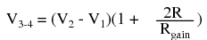
The regular differential amplifier on the right-hand side of the circuit then takes this voltage drop between points 3 and 4, and amplifies it by a gain of 1 (assuming again that all "R" resistors are of equal value). Though this looks like a cumbersome way to build a differential amplifier, it has the distinct advantages of possessing extremely high input impedances on the V1 and V2 inputs (because they connect straight into the noninverting inputs of their respective op-amps), and adjustable gain that can be set by a single resistor. Manipulating the above formula a bit, we have a general expression for overall voltage gain in the instrumentation amplifier:
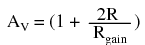
Though it may not be obvious by looking at the schematic, we can change the differential gain of the instrumentation amplifier simply by changing the value of one resistor: Rgain. Yes, we could still change the overall gain by changing the values of some of the other resistors, but this would necessitate balanced resistor value changes for the circuit to remain symmetrical. Please note that the lowest gain possible with the above circuit is obtained with Rgain completely open (infinite resistance), and that gain value is 1.
By introducing electrical reactance into the feedback loops of op-amp amplifier circuits, we can cause the output to respond to changes in the input voltage over time. Drawing their names from their respective calculus functions, the integrator produces a voltage output proportional to the product (multiplication) of the input voltage and time; and the differentiator (not to be confused with differential) produces a voltage output proportional to the input voltage's rate of change.
Capacitance can be defined as the measure of a capacitor's opposition to changes in voltage. The greater the capacitance, the more the opposition. Capacitors oppose voltage change by creating current in the circuit: that is, they either charge or discharge in response to a change in applied voltage. So, the more capacitance a capacitor has, the greater its charge or discharge current will be for any given rate of voltage change across it. The equation for this is quite simple:
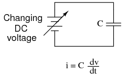
The dv/dt fraction is a calculus expression representing the rate of voltage change over time. If the DC supply in the above circuit were steadily increased from a voltage of 15 volts to a voltage of 16 volts over a time span of 1 hour, the current through the capacitor would most likely be very small, because of the very low rate of voltage change (dv/dt = 1 volt / 3600 seconds). However, if we steadily increased the DC supply from 15 volts to 16 volts over a shorter time span of 1 second, the rate of voltage change would be much higher, and thus the charging current would be much higher (3600 times higher, to be exact). Same amount of change in voltage, but vastly different rates of change, resulting in vastly different amounts of current in the circuit.
To put some definite numbers to this formula, if the voltage across a 47 µF capacitor was changing at a linear rate of 3 volts per second, the current "through" the capacitor would be (47 µF)(3 V/s) = 141 µA.
We can build an op-amp circuit which measures change in voltage by measuring current through a capacitor, and outputs a voltage proportional to that current:
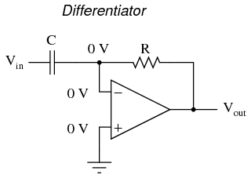
The right-hand side of the capacitor is held to a voltage of 0 volts, due to the "virtual ground" effect. Therefore, current "through" the capacitor is solely due to change in the input voltage. A steady input voltage won't cause a current through C, but a changing input voltage will.
Capacitor current moves through the feedback resistor, producing a drop across it, which is the same as the output voltage. A linear, positive rate of input voltage change will result in a steady negative voltage at the output of the op-amp. Conversely, a linear, negative rate of input voltage change will result in a steady positive voltage at the output of the op-amp. This polarity inversion from input to output is due to the fact that the input signal is being sent (essentially) to the inverting input of the op-amp, so it acts like the inverting amplifier mentioned previously. The faster the rate of voltage change at the input (either positive or negative), the greater the voltage at the output.
The formula for determining voltage output for the differentiator is as follows:
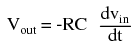
Applications for this, besides representing the derivative calculus function inside of an analog computer, include rate-of-change indicators for process instrumentation. One such rate-of-change signal application might be for monitoring (or controlling) the rate of temperature change in a furnace, where too high or too low of a temperature rise rate could be detrimental. The DC voltage produced by the differentiator circuit could be used to drive a comparator, which would signal an alarm or activate a control if the rate of change exceeded a pre-set level.
In process control, the derivative function is used to make control decisions for maintaining a process at setpoint, by monitoring the rate of process change over time and taking action to prevent excessive rates of change, which can lead to an unstable condition. Analog electronic controllers use variations of this circuitry to perform the derivative function.
On the other hand, there are applications where we need precisely the opposite function, called integration in calculus. Here, the op-amp circuit would generate an output voltage proportional to the magnitude and duration that an input voltage signal has deviated from 0 volts. Stated differently, a constant input signal would generate a certain rate of change in the output voltage: differentiation in reverse. To do this, all we have to do is swap the capacitor and resistor in the previous circuit:
As before, the negative feedback of the op-amp ensures that the inverting input will be held at 0 volts (the virtual ground). If the input voltage is exactly 0 volts, there will be no current through the resistor, therefore no charging of the capacitor, and therefore the output voltage will not change. We cannot guarantee what voltage will be at the output with respect to ground in this condition, but we can say that the output voltage will be constant.
However, if we apply a constant, positive voltage to the input, the op-amp output will fall negative at a linear rate, in an attempt to produce the changing voltage across the capacitor necessary to maintain the current established by the voltage difference across the resistor. Conversely, a constant, negative voltage at the input results in a linear, rising (positive) voltage at the output. The output voltage rate-of-change will be proportional to the value of the input voltage.
The formula for determining voltage output for the integrator is as follows:
One application for this device would be to keep a "running total" of radiation exposure, or dosage, if the input voltage was a proportional signal supplied by an electronic radiation detector. Nuclear radiation can be just as damaging at low intensities for long periods of time as it is at high intensities for short periods of time. An integrator circuit would take both the intensity (input voltage magnitude) and time into account, generating an output voltage representing total radiation dosage.
Another application would be to integrate a signal representing water flow, producing a signal representing total quantity of water that has passed by the flowmeter. This application of an integrator is sometimes called a totalizer in the industrial instrumentation trade.
As we've seen, negative feedback is an incredibly useful principle when applied to operational amplifiers. It is what allows us to create all these practical circuits, being able to precisely set gains, rates, and other significant parameters with just a few changes of resistor values. Negative feedback makes all these circuits stable and self-correcting.
The basic principle of negative feedback is that the output tends to drive in a direction that creates a condition of equilibrium (balance). In an op-amp circuit with no feedback, there is no corrective mechanism, and the output voltage will saturate with the tiniest amount of differential voltage applied between the inputs. The result is a comparator:
With negative feedback (the output voltage "fed back" somehow to the inverting input), the circuit tends to prevent itself from driving the output to full saturation. Rather, the output voltage drives only as high or as low as needed to balance the two inputs' voltages:
Whether the output is directly fed back to the inverting (-) input or coupled through a set of components, the effect is the same: the extremely high differential voltage gain of the op-amp will be "tamed" and the circuit will respond according to the dictates of the feedback "loop" connecting output to inverting input.
Another type of feedback, namely positive feedback, also finds application in op-amp circuits. Unlike negative feedback, where the output voltage is "fed back" to the inverting (-) input, with positive feedback the output voltage is somehow routed back to the noninverting (+) input. In its simplest form, we could connect a straight piece of wire from output to noninverting input and see what happens:
The inverting input remains disconnected from the feedback loop, and is free to receive an external voltage. Let's see what happens if we ground the inverting input:
With the inverting input grounded (maintained at zero volts), the output voltage will be dictated by the magnitude and polarity of the voltage at the noninverting input. If that voltage happens to be positive, the op-amp will drive its output positive as well, feeding that positive voltage back to the noninverting input, which will result in full positive output saturation. On the other hand, if the voltage on the noninverting input happens to start out negative, the op-amp's output will drive in the negative direction, feeding back to the noninverting input and resulting in full negative saturation.
What we have here is a circuit whose output is bistable: stable in one of two states (saturated positive or saturated negative). Once it has reached one of those saturated states, it will tend to remain in that state, unchanging. What is necessary to get it to switch states is a voltage placed upon the inverting (-) input of the same polarity, but of a slightly greater magnitude. For example, if our circuit is saturated at an output voltage of +12 volts, it will take an input voltage at the inverting input of at least +12 volts to get the output to change. When it changes, it will saturate fully negative.
So, an op-amp with positive feedback tends to stay in whatever output state its already in. It "latches" between one of two states, saturated positive or saturated negative. Technically, this is known as hysteresis.
Hysteresis can be a useful property for a comparator circuit to have. As we've seen before, comparators can be used to produce a square wave from any sort of ramping waveform (sine wave, triangle wave, sawtooth wave, etc.) input. If the incoming AC waveform is noise-free (that is, a "pure" waveform), a simple comparator will work just fine.
However, if there exist any anomalies in the waveform such as harmonics or "spikes" which cause the voltage to rise and fall significantly within the timespan of a single cycle, a comparator's output might switch states unexpectedly:
Any time there is a transition through the reference voltage level, no matter how tiny that transition may be, the output of the comparator will switch states, producing a square wave with "glitches."
If we add a little positive feedback to the comparator circuit, we will introduce hysteresis into the output. This hysteresis will cause the output to remain in its current state unless the AC input voltage undergoes a major change in magnitude.
What this feedback resistor creates is a dual-reference for the comparator circuit. The voltage applied to the noninverting (+) input as a reference which to compare with the incoming AC voltage changes depending on the value of the op-amp's output voltage. When the op-amp output is saturated positive, the reference voltage at the noninverting input will be more positive than before. Conversely, when the op-amp output is saturated negative, the reference voltage at the noninverting input will be more negative than before. The result is easier to understand on a graph:
When the op-amp output is saturated positive, the upper reference voltage is in effect, and the output won't drop to a negative saturation level unless the AC input rises above that upper reference level. Conversely, when the op-amp output is saturated negative, the lower reference voltage is in effect, and the output won't rise to a positive saturation level unless the AC input drops below that lower reference level. The result is a clean square-wave output again, despite significant amounts of distortion in the AC input signal. In order for a "glitch" to cause the comparator to switch from one state to another, it would have to be at least as big (tall) as the difference between the upper and lower reference voltage levels, and at the right point in time to cross both those levels.
Another application of positive feedback in op-amp circuits is in the construction of oscillator circuits. An oscillator is a device that produces an alternating (AC), or at least pulsing, output voltage. Technically, it is known as an astable device: having no stable output state (no equilibrium whatsoever). Oscillators are very useful devices, and they are easily made with just an op-amp and a few external components.
When the output is saturated positive, the Vref will be positive, and the capacitor will charge up in a positive direction. When Vramp exceeds Vref by the tiniest margin, the output will saturate negative, and the capacitor will charge in the opposite direction (polarity). Oscillation occurs because the positive feedback is instantaneous and the negative feedback is delayed (by means of an RC time constant). The frequency of this oscillator may be adjusted by varying the size of any component.
Real operational have some imperfections compared to an “ideal” model. A real device deviates from a perfect difference amplifier. One minus one may not be zero. It may have have an offset like an analog meter which is not zeroed. The inputs may draw current. The characteristics may drift with age and temperature. Gain may be reduced at high frequencies, and phase may shift from input to output. These imperfection may cause no noticable errors in some applications, unacceptable errors in others. In some cases these errors may be compensated for. Sometimes a higher quality, higher cost device is required.
As stated before, an ideal differential amplifier only amplifies the voltage difference between its two inputs. If the two inputs of a differential amplifier were to be shorted together (thus ensuring zero potential difference between them), there should be no change in output voltage for any amount of voltage applied between those two shorted inputs and ground:
Voltage that is common between either of the inputs and ground, as "Vcommon-mode" is in this case, is called common-mode voltage. As we vary this common voltage, the perfect differential amplifier's output voltage should hold absolutely steady (no change in output for any arbitrary change in common-mode input). This translates to a common-mode voltage gain of zero.
The operational amplifier, being a differential amplifier with high differential gain, would ideally have zero common-mode gain as well. In real life, however, this is not easily attained. Thus, common-mode voltages will invariably have some effect on the op-amp's output voltage.
The performance of a real op-amp in this regard is most commonly measured in terms of its differential voltage gain (how much it amplifies the difference between two input voltages) versus its common-mode voltage gain (how much it amplifies a common-mode voltage). The ratio of the former to the latter is called the common-mode rejection ratio, abbreviated as CMRR:
An ideal op-amp, with zero common-mode gain would have an infinite CMRR. Real op-amps have high CMRRs, the ubiquitous 741 having something around 70 dB, which works out to a little over 3,000 in terms of a ratio.
Because the common mode rejection ratio in a typical op-amp is so high, common-mode gain is usually not a great concern in circuits where the op-amp is being used with negative feedback. If the common-mode input voltage of an amplifier circuit were to suddenly change, thus producing a corresponding change in the output due to common-mode gain, that change in output would be quickly corrected as negative feedback and differential gain (being much greater than common-mode gain) worked to bring the system back to equilibrium. Sure enough, a change might be seen at the output, but it would be a lot smaller than what you might expect.
A consideration to keep in mind, though, is common-mode gain in differential op-amp circuits such as instrumentation amplifiers. Outside of the op-amp's sealed package and extremely high differential gain, we may find common-mode gain introduced by an imbalance of resistor values. To demonstrate this, we'll run a SPICE analysis on an instrumentation amplifier with inputs shorted together (no differential voltage), imposing a common-mode voltage to see what happens. First, we'll run the analysis showing the output voltage of a perfectly balanced circuit. We should expect to see no change in output voltage as the common-mode voltage changes:
instrumentation amplifier v1 1 0 rin1 1 0 9e12 rjump 1 4 1e-12 rin2 4 0 9e12 e1 3 0 1 2 999k e2 6 0 4 5 999k e3 9 0 8 7 999k rload 9 0 10k r1 2 3 10k rgain 2 5 10k r2 5 6 10k r3 3 7 10k r4 7 9 10k r5 6 8 10k r6 8 0 10k .dc v1 0 10 1 .print dc v(9) .end
v1 v(9) 0.000E+00 0.000E+00 1.000E+00 1.355E-16 2.000E+00 2.710E-16 3.000E+00 0.000E+00 As you can see, the output voltage v(9) 4.000E+00 5.421E-16 hardly changes at all for a common-mode 5.000E+00 0.000E+00 input voltage (v1) that sweeps from 0 6.000E+00 0.000E+00 to 10 volts. 7.000E+00 0.000E+00 8.000E+00 1.084E-15 9.000E+00 -1.084E-15 1.000E+01 0.000E+00
Aside from very small deviations (actually due to quirks of SPICE rather than real behavior of the circuit), the output remains stable where it should be: at 0 volts, with zero input voltage differential. However, let's introduce a resistor imbalance in the circuit, increasing the value of R5 from 10,000 Ω to 10,500 Ω, and see what happens (the netlist has been omitted for brevity -- the only thing altered is the value of R5):
v1 v(9) 0.000E+00 0.000E+00 1.000E+00 -2.439E-02 2.000E+00 -4.878E-02 3.000E+00 -7.317E-02 This time we see a significant variation 4.000E+00 -9.756E-02 (from 0 to 0.2439 volts) in output voltage 5.000E+00 -1.220E-01 as the common-mode input voltage sweeps 6.000E+00 -1.463E-01 from 0 to 10 volts as it did before. 7.000E+00 -1.707E-01 8.000E+00 -1.951E-01 9.000E+00 -2.195E-01 1.000E+01 -2.439E-01
Our input voltage differential is still zero volts, yet the output voltage changes significantly as the common-mode voltage is changed. This is indicative of a common-mode gain, something we're trying to avoid. More than that, its a common-mode gain of our own making, having nothing to do with imperfections in the op-amps themselves. With a much-tempered differential gain (actually equal to 3 in this particular circuit) and no negative feedback outside the circuit, this common-mode gain will go unchecked in an instrument signal application.
There is only one way to correct this common-mode gain, and that is to balance all the resistor values. When designing an instrumentation amplifier from discrete components (rather than purchasing one in an integrated package), it is wise to provide some means of making fine adjustments to at least one of the four resistors connected to the final op-amp to be able to "trim away" any such common-mode gain. Providing the means to "trim" the resistor network has additional benefits as well. Suppose that all resistor values are exactly as they should be, but a common-mode gain exists due to an imperfection in one of the op-amps. With the adjustment provision, the resistance could be trimmed to compensate for this unwanted gain.
One quirk of some op-amp models is that of output latch-up, usually caused by the common-mode input voltage exceeding allowable limits. If the common-mode voltage falls outside of the manufacturer's specified limits, the output may suddenly "latch" in the high mode (saturate at full output voltage). In JFET-input operational amplifiers, latch-up may occur if the common-mode input voltage approaches too closely to the negative power supply rail voltage. On the TL082 op-amp, for example, this occurs when the common-mode input voltage comes within about 0.7 volts of the negative power supply rail voltage. Such a situation may easily occur in a single-supply circuit, where the negative power supply rail is ground (0 volts), and the input signal is free to swing to 0 volts.
Latch-up may also be triggered by the common-mode input voltage exceeding power supply rail voltages, negative or positive. As a rule, you should never allow either input voltage to rise above the positive power supply rail voltage, or sink below the negative power supply rail voltage, even if the op-amp in question is protected against latch-up (as are the 741 and 1458 op-amp models). At the very least, the op-amp's behavior may become unpredictable. At worst, the kind of latch-up triggered by input voltages exceeding power supply voltages may be destructive to the op-amp.
While this problem may seem easy to avoid, its possibility is more likely than you might think. Consider the case of an operational amplifier circuit during power-up. If the circuit receives full input signal voltage before its own power supply has had time enough to charge the filter capacitors, the common-mode input voltage may easily exceed the power supply rail voltages for a short time. If the op-amp receives signal voltage from a circuit supplied by a different power source, and its own power source fails, the signal voltage(s) may exceed the power supply rail voltages for an indefinite amount of time!
Another practical concern for op-amp performance is voltage offset. That is, effect of having the output voltage something other than zero volts when the two input terminals are shorted together. Remember that operational amplifiers are differential amplifiers above all: they're supposed to amplify the difference in voltage between the two input connections and nothing more. When that input voltage difference is exactly zero volts, we would (ideally) expect to have exactly zero volts present on the output. However, in the real world this rarely happens. Even if the op-amp in question has zero common-mode gain (infinite CMRR), the output voltage may not be at zero when both inputs are shorted together. This deviation from zero is called offset.
A perfect op-amp would output exactly zero volts with both its inputs shorted together and grounded. However, most op-amps off the shelf will drive their outputs to a saturated level, either negative or positive. In the example shown above, the output voltage is saturated at a value of positive 14.7 volts, just a bit less than +V (+15 volts) due to the positive saturation limit of this particular op-amp. Because the offset in this op-amp is driving the output to a completely saturated point, there's no way of telling how much voltage offset is present at the output. If the +V/-V split power supply was of a high enough voltage, who knows, maybe the output would be several hundred volts one way or the other due to the effects of offset!
For this reason, offset voltage is usually expressed in terms of the equivalent amount of input voltage differential producing this effect. In other words, we imagine that the op-amp is perfect (no offset whatsoever), and a small voltage is being applied in series with one of the inputs to force the output voltage one way or the other away from zero. Being that op-amp differential gains are so high, the figure for "input offset voltage" doesn't have to be much to account for what we see with shorted inputs:
Offset voltage will tend to introduce slight errors in any op-amp circuit. So how do we compensate for it? Unlike common-mode gain, there are usually provisions made by the manufacturer to trim the offset of a packaged op-amp. Usually, two extra terminals on the op-amp package are reserved for connecting an external "trim" potentiometer. These connection points are labeled offset null and are used in this general way:
On single op-amps such as the 741 and 3130, the offset null connection points are pins 1 and 5 on the 8-pin DIP package. Other models of op-amp may have the offset null connections located on different pins, and/or require a slightly difference configuration of trim potentiometer connection. Some op-amps don't provide offset null pins at all! Consult the manufacturer's specifications for details.
Inputs on an op-amp have extremely high input impedances. That is, the input currents entering or exiting an op-amp's two input signal connections are extremely small. For most purposes of op-amp circuit analysis, we treat them as though they don't exist at all. We analyze the circuit as though there was absolutely zero current entering or exiting the input connections.
This idyllic picture, however, is not entirely true. Op-amps, especially those op-amps with bipolar transistor inputs, have to have some amount of current through their input connections in order for their internal circuits to be properly biased. These currents, logically, are called bias currents. Under certain conditions, op-amp bias currents may be problematic. The following circuit illustrates one of those problem conditions:
At first glance, we see no apparent problems with this circuit. A thermocouple, generating a small voltage proportional to temperature (actually, a voltage proportional to the difference in temperature between the measurement junction and the "reference" junction formed when the alloy thermocouple wires connect with the copper wires leading to the op-amp) drives the op-amp either positive or negative. In other words, this is a kind of comparator circuit, comparing the temperature between the end thermocouple junction and the reference junction (near the op-amp). The problem is this: the wire loop formed by the thermocouple does not provide a path for both input bias currents, because both bias currents are trying to go the same way (either into the op-amp or out of it).
In order for this circuit to work properly, we must ground one of the input wires, thus providing a path to (or from) ground for both currents:
Not necessarily an obvious problem, but a very real one!
Another way input bias currents may cause trouble is by dropping unwanted voltages across circuit resistances. Take this circuit for example:
We expect a voltage follower circuit such as the one above to reproduce the input voltage precisely at the output. But what about the resistance in series with the input voltage source? If there is any bias current through the noninverting (+) input at all, it will drop some voltage across Rin, thus making the voltage at the noninverting input unequal to the actual Vin value. Bias currents are usually in the microamp range, so the voltage drop across Rin won't be very much, unless Rin is very large. One example of an application where the input resistance (Rin) would be very large is that of pH probe electrodes, where one electrode contains an ion-permeable glass barrier (a very poor conductor, with millions of Ω of resistance).
If we were actually building an op-amp circuit for pH electrode voltage measurement, we'd probably want to use a FET or MOSFET (IGFET) input op-amp instead of one built with bipolar transistors (for less input bias current). But even then, what slight bias currents may remain can cause measurement errors to occur, so we have to find some way to mitigate them through good design.
One way to do so is based on the assumption that the two input bias currents will be the same. In reality, they are often close to being the same, the difference between them referred to as the input offset current. If they are the same, then we should be able to cancel out the effects of input resistance voltage drop by inserting an equal amount of resistance in series with the other input, like this:
With the additional resistance added to the circuit, the output voltage will be closer to Vin than before, even if there is some offset between the two input currents.
For both inverting and noninverting amplifier circuits, the bias current compensating resistor is placed in series with the noninverting (+) input to compensate for bias current voltage drops in the divider network:
In either case, the compensating resistor value is determined by calculating the parallel resistance value of R1 and R2. Why is the value equal to the parallel equivalent of R1 and R2? When using the Superposition Theorem to figure how much voltage drop will be produced by the inverting (-) input's bias current, we treat the bias current as though it were coming from a current source inside the op-amp and short-circuit all voltage sources (Vin and Vout). This gives two parallel paths for bias current (through R1 and through R2, both to ground). We want to duplicate the bias current's effect on the noninverting (+) input, so the resistor value we choose to insert in series with that input needs to be equal to R1 in parallel with R2.
A related problem, occasionally experienced by students just learning to build operational amplifier circuits, is caused by a lack of a common ground connection to the power supply. It is imperative to proper op-amp function that some terminal of the DC power supply be common to the "ground" connection of the input signal(s). This provides a complete path for the bias currents, feedback current(s), and for the load (output) current. Take this circuit illustration, for instance, showing a properly grounded power supply:
Here, arrows denote the path of electron flow through the power supply batteries, both for powering the op-amp's internal circuitry (the "potentiometer" inside of it that controls output voltage), and for powering the feedback loop of resistors R1 and R2. Suppose, however, that the ground connection for this "split" DC power supply were to be removed. The effect of doing this is profound:
No electrons may flow in or out of the op-amp's output terminal, because the pathway to the power supply is a "dead end." Thus, no electrons flow through the ground connection to the left of R1, neither through the feedback loop. This effectively renders the op-amp useless: it can neither sustain current through the feedback loop, nor through a grounded load, since there is no connection from any point of the power supply to ground.
The bias currents are also stopped, because they rely on a path to the power supply and back to the input source through ground. The following diagram shows the bias currents (only), as they go through the input terminals of the op-amp, through the base terminals of the input transistors, and eventually through the power supply terminal(s) and back to ground.
Without a ground reference on the power supply, the bias currents will have no complete path for a circuit, and they will halt. Since bipolar junction transistors are current-controlled devices, this renders the input stage of the op-amp useless as well, as both input transistors will be forced into cutoff by the complete lack of base current.
Being semiconductor devices, op-amps are subject to slight changes in behavior with changes in operating temperature. Any changes in op-amp performance with temperature fall under the category of op-amp drift. Drift parameters can be specified for bias currents, offset voltage, and the like. Consult the manufacturer's data sheet for specifics on any particular op-amp.
To minimize op-amp drift, we can select an op-amp made to have minimum drift, and/or we can do our best to keep the operating temperature as stable as possible. The latter action may involve providing some form of temperature control for the inside of the equipment housing the op-amp(s). This is not as strange as it may first seem. Laboratory-standard precision voltage reference generators, for example, are sometimes known to employ "ovens" for keeping their sensitive components (such as zener diodes) at constant temperatures. If extremely high accuracy is desired over the usual factors of cost and flexibility, this may be an option worth looking at.
With their incredibly high differential voltage gains, op-amps are prime candidates for a phenomenon known as feedback oscillation. You've probably heard the equivalent audio effect when the volume (gain) on a public-address or other microphone amplifier system is turned too high: that high pitched squeal resulting from the sound waveform "feeding back" through the microphone to be amplified again. An op-amp circuit can manifest this same effect, with the feedback happening electrically rather than audibly.
A case example of this is seen in the 3130 op-amp, if it is connected as a voltage follower with the bare minimum of wiring connections (the two inputs, output, and the power supply connections). The output of this op-amp will self-oscillate due to its high gain, no matter what the input voltage. To combat this, a small compensation capacitor must be connected to two specially-provided terminals on the op-amp. The capacitor provides a high-impedance path for negative feedback to occur within the op-amp's circuitry, thus decreasing the AC gain and inhibiting unwanted oscillations. If the op-amp is being used to amplify high-frequency signals, this compensation capacitor may not be needed, but it is absolutely essential for DC or low-frequency AC signal operation.
Some op-amps, such as the model 741, have a compensation capacitor built in to minimize the need for external components. This improved simplicity is not without a cost: due to that capacitor's presence inside the op-amp, the negative feedback tends to get stronger as the operating frequency increases (that capacitor's reactance decreases with higher frequencies). As a result, the op-amp's differential voltage gain decreases as frequency goes up: it becomes a less effective amplifier at higher frequencies.
Op-amp manufacturers will publish the frequency response curves for their products. Since a sufficiently high differential gain is absolutely essential to good feedback operation in op-amp circuits, the gain/frequency response of an op-amp effectively limits its "bandwidth" of operation. The circuit designer must take this into account if good performance is to be maintained over the required range of signal frequencies.
In order to illustrate the phase shift from input to output of an operational amplifier (op-amp), the OPA227 was tested in our lab. The OPA227 was constructed in a typical non-inverting configuration (Figure below).
OPA227 Non-inverting stage
The circuit configuration calls for a signal gain of ≅34 V/V or ≅50 dB. The input excitation at Vsrc was set to 10 mVp, and three frequencies of interest: 2.2 kHz, 22 kHz, and 220 MHz. The OPA227's open loop gain and phase curve vs. frequency is shown in Figure below.
AV and Φ vs. Frequency plot
To help predict the closed loop phase shift from input to output, we can use the open loop gain and phase curve. Since the circuit configuration calls for a closed loop gain, or 1/β, of ≅50 dB, the closed loop gain curve intersects the open loop gain curve at approximately 22 kHz. After this intersection, the closed loop gain curve rolls off at the typical 20 dB/decade for voltage feedback amplifiers, and follows the open loop gain curve.
What is actually at work here is the negative feedback from the closed loop modifies the open loop response. Closing the loop with negative feedback establishes a closed loop pole at 22 kHz. Much like the dominant pole in the open loop phase curve, we will expect phase shift in the closed loop response. How much phase shift will we see?
Since the new pole is now at 22 kHz, this is also the -3 dB point as the pole starts to roll off the closed loop again at 20 dB per decade as stated earlier. As with any pole in basic control theory, phase shift starts to occur one decade in frequency before the pole, and ends at 90o of phase shift one decade in frequency after the pole. So what does this predict for the closed loop response in our circuit?
This will predict phase shift starting at 2.2 kHz, with 45o of phase shift at the -3 dB point of 22 kHz, and finally ending with 90o of phase shift at 220 kHz. The three Figures shown below are oscilloscope captures at the frequencies of interest for our OPA227 circuit. Figure below is set for 2.2 kHz, and no noticeable phase shift is present. Figure below is set for 220 kHz, and ≅45o of phase shift is recorded. Finally, Figure below is set for 220 MHz, and the expected ≅90o of phase shift is recorded. The scope plots were captured using a LeCroy 44x Wavesurfer. The final scope plot used a x1 probe with the trigger set to HF reject.
OPA227 Av=50dB @ 2.2 kHz
OPA227 Av=50dB @ 22 kHz
OPA227 Av=50dB @ 220 kHz
While mention of operational amplifiers typically provokes visions of semiconductor devices built as integrated circuits on a miniature silicon chip, the first op-amps were actually vacuum tube circuits. The first commercial, general purpose operational amplifier was manufactured by the George A. Philbrick Researches, Incorporated, in 1952. Designated the K2-W, it was built around two twin-triode tubes mounted in an assembly with an octal (8-pin) socket for easy installation and servicing in electronic equipment chassis of that era. The assembly looked something like this:
The schematic diagram shows the two tubes, along with ten resistors and two capacitors, a fairly simple circuit design even by 1952 standards:
In case you're unfamiliar with the operation of vacuum tubes, they operate similarly to N-channel depletion-type IGFET transistors: that is, they conduct more current when the control grid (the dashed line) is made more positive with respect to the cathode (the bent line near the bottom of the tube symbol), and conduct less current when the control grid is made less positive (or more negative) than the cathode. The twin triode tube on the left functions as a differential pair, converting the differential inputs (inverting and noninverting input voltage signals) into a single, amplified voltage signal which is then fed to the control grid of the left triode of the second triode pair through a voltage divider (1 MΩ -- 2.2 MΩ). That triode amplifies and inverts the output of the differential pair for a larger voltage gain, then the amplified signal is coupled to the second triode of the same dual-triode tube in a noninverting amplifier configuration for a larger current gain. The two neon "glow tubes" act as voltage regulators, similar to the behavior of semiconductor zener diodes, to provide a bias voltage in the coupling between the two single-ended amplifier triodes.
With a dual-supply voltage of +300/-300 volts, this op-amp could only swing its output +/- 50 volts, which is very poor by today's standards. It had an open-loop voltage gain of 15,000 to 20,000, a slew rate of +/- 12 volts/µsecond, a maximum output current of 1 mA, a quiescent power consumption of over 3 watts (not including power for the tubes' filaments!), and cost about $24 in 1952 dollars. Better performance could have been attained using a more sophisticated circuit design, but only at the expense of greater power consumption, greater cost, and decreased reliability.
With the advent of solid-state transistors, op-amps with far less quiescent power consumption and increased reliability became feasible, but many of the other performance parameters remained about the same. Take for instance Philbrick's model P55A, a general-purpose solid-state op-amp circa 1966. The P55A sported an open-loop gain of 40,000, a slew rate of 1.5 volt/µsecond and an output swing of +/- 11 volts (at a power supply voltage of +/- 15 volts), a maximum output current of 2.2 mA, and a cost of $49 (or about $21 for the "utility grade" version). The P55A, as well as other op-amps in Philbrick's lineup of the time, was of discrete-component construction, its constituent transistors, resistors, and capacitors housed in a solid "brick" resembling a large integrated circuit package.
It isn't very difficult to build a crude operational amplifier using discrete components. A schematic of one such circuit is shown in Figure below.
A simple operational amplifier made from discrete components.
While its performance is rather dismal by modern standards, it demonstrates that complexity is not necessary to create a minimally functional op-amp. Transistors Q3 and Q4 form the heart of another differential pair circuit, the semiconductor equivalent of the first triode tube in the K2-W schematic. As it was in the vacuum tube circuit, the purpose of a differential pair is to amplify and convert a differential voltage between the two input terminals to a single-ended output voltage.
With the advent of integrated-circuit (IC) technology, op-amp designs experienced a dramatic increase in performance, reliability, density, and economy. Between the years of 1964 and 1968, the Fairchild corporation introduced three models of IC op-amps: the 702, 709, and the still-popular 741. While the 741 is now considered outdated in terms of performance, it is still a favorite among hobbyists for its simplicity and fault tolerance (short-circuit protection on the output, for instance). Personal experience abusing many 741 op-amps has led me to the conclusion that it is a hard chip to kill . . .
The internal schematic diagram for a model 741 op-amp is shown in Figure below.
Schematic diagram of a model 741 op-amp.
By integrated circuit standards, the 741 is a very simple device: an example of small-scale integration, or SSI technology. It would be no small matter to build this circuit using discrete components, so you can see the advantages of even the most primitive integrated circuit technology over discrete components where high parts counts are involved.
For the hobbyist, student, or engineer desiring greater performance, there are literally hundreds of op-amp models to choose from. Many sell for less than a dollar apiece, even retail! Special-purpose instrumentation and radio-frequency (RF) op-amps may be quite a bit more expensive. In this section I will showcase several popular and affordable op-amps, comparing and contrasting their performance specifications. The venerable 741 is included as a "benchmark" for comparison, although it is, as I said before, considered an obsolete design.
Widely used operational amplifiers
| Model | Devices/ package | Power supply | Bandwidth | Bias current | Slew rate | Output current |
|---|---|---|---|---|---|---|
| number | (count) | (V) | (MHz) | (nA) | (V/µS) | (mA) |
| TL082 | 2 | 12 / 36 | 4 | 8 | 13 | 17 |
| LM301A | 1 | 10 / 36 | 1 | 250 | 0.5 | 25 |
| LM318 | 1 | 10 / 40 | 15 | 500 | 70 | 20 |
| LM324 | 4 | 3 / 32 | 1 | 45 | 0.25 | 20 |
| LF353 | 2 | 12 / 36 | 4 | 8 | 13 | 20 |
| LF356 | 1 | 10 / 36 | 5 | 8 | 12 | 25 |
| LF411 | 1 | 10 / 36 | 4 | 20 | 15 | 25 |
| 741C | 1 | 10 / 36 | 1 | 500 | 0.5 | 25 |
| LM833 | 2 | 10 / 36 | 15 | 1050 | 7 | 40 |
| LM1458 | 2 | 6 / 36 | 1 | 800 | 10 | 45 |
| CA3130 | 1 | 5 / 16 | 15 | 0.05 | 10 | 20 |
Listed in Table above are but a few of the low-cost operational amplifier models widely available from electronics suppliers. Most of them are available through retail supply stores such as Radio Shack. All are under $1.00 cost direct from the manufacturer (year 2001 prices). As you can see, there is substantial variation in performance between some of these units. Take for instance the parameter of input bias current: the CA3130 wins the prize for lowest, at 0.05 nA (or 50 pA), and the LM833 has the highest at slightly over 1 µA. The model CA3130 achieves its incredibly low bias current through the use of MOSFET transistors in its input stage. One manufacturer advertises the 3130's input impedance as 1.5 tera-ohms, or 1.5 x 1012 Ω! Other op-amps shown here with low bias current figures use JFET input transistors, while the high bias current models use bipolar input transistors.
While the 741 is specified in many electronic project schematics and showcased in many textbooks, its performance has long been surpassed by other designs in every measure. Even some designs originally based on the 741 have been improved over the years to far surpass original design specifications. One such example is the model 1458, two op-amps in an 8-pin DIP package, which at one time had the exact same performance specifications as the single 741. In its latest incarnation it boasts a wider power supply voltage range, a slew rate 50 times as great, and almost twice the output current capability of a 741, while still retaining the output short-circuit protection feature of the 741. Op-amps with JFET and MOSFET input transistors far exceed the 741's performance in terms of bias current, and generally manage to beat the 741 in terms of bandwidth and slew rate as well.
My own personal recommendations for op-amps are as such: when low bias current is a priority (such as in low-speed integrator circuits), choose the 3130. For general-purpose DC amplifier work, the 1458 offers good performance (and you get two op-amps in the space of one package). For an upgrade in performance, choose the model 353, as it is a pin-compatible replacement for the 1458. The 353 is designed with JFET input circuitry for very low bias current, and has a bandwidth 4 times are great as the 1458, although its output current limit is lower (but still short-circuit protected). It may be more difficult to find on the shelf of your local electronics supply house, but it is just as reasonably priced as the 1458.
If low power supply voltage is a requirement, I recommend the model 324, as it functions on as low as 3 volts DC. Its input bias current requirements are also low, and it provides four op-amps in a single 14-pin chip. Its major weakness is speed, limited to 1 MHz bandwidth and an output slew rate of only 0.25 volts per µs. For high-frequency AC amplifier circuits, the 318 is a very good "general purpose" model.
Special-purpose op-amps are available for modest cost which provide better performance specifications. Many of these are tailored for a specific type of performance advantage, such as maximum bandwidth or minimum bias current. Take for instance the op-amps, both designed for high bandwidth in Table below.
High bandwidth operational amplifiers
| Model | Devices/ package | Power supply | Bandwidth | Bias current | Slew rate | Output current |
|---|---|---|---|---|---|---|
| number | (count) | (V) | (MHz) | (nA) | (V/µS) | (mA) |
| CLC404 | 1 | 10 / 14 | 232 | 44,000 | 2600 | 70 |
| CLC425 | 1 | 5 / 14 | 1900 | 40,000 | 350 | 90 |
The CLC404 lists at $21.80 (almost as much as George Philbrick's first commercial op-amp, albeit without correction for inflation), while the CLC425 is quite a bit less expensive at $3.23 per unit. In both cases high speed is achieved at the expense of high bias currents and restrictive power supply voltage ranges. Some op-amps, designed for high power output are listed in Table below.
High current operational amplifiers
| Model | Devices/ package | Power supply | Bandwidth | Bias current | Slew rate | Output current |
|---|---|---|---|---|---|---|
| number | (count) | (V) | (MHz) | (nA) | (V/µS) | (mA) |
| LM12CL | 1 | 15 / 80 | 0.7 | 1000 | 9 | 13,000 |
| LM7171 | 1 | 5.5 / 36 | 200 | 12,000 | 4100 | 100 |
Yes, the LM12CL actually has an output current rating of 13 amps (13,000 milliamps)! It lists at $14.40, which is not a lot of money, considering the raw power of the device. The LM7171, on the other hand, trades high current output ability for fast voltage output ability (a high slew rate). It lists at $1.19, about as low as some "general purpose" op-amps.
Amplifier packages may also be purchased as complete application circuits as opposed to bare operational amplifiers. The Burr-Brown and Analog Devices corporations, for example, both long known for their precision amplifier product lines, offer instrumentation amplifiers in pre-designed packages as well as other specialized amplifier devices. In designs where high precision and repeatability after repair is important, it might be advantageous for the circuit designer to choose such a pre-engineered amplifier "block" rather than build the circuit from individual op-amps. Of course, these units typically cost quite a bit more than individual op-amps.
Parametrical data for all semiconductor op-amp models except the CA3130 comes from National Semiconductor's online resources, available at this website: [*]. Data for the CA3130 comes from Harris Semiconductor's CA3130/CA3130A datasheet (file number 817.4).
Contributors to this chapter are listed in chronological order of their contributions, from most recent to first. See Appendix 2 (Contributor List) for dates and contact information.
Wayne Little (June 2007): Author, “Input to output phase shift” subsection, in “Practical considerations” section.
Lessons In Electric Circuits copyright (C) 2000-2023 Tony R. Kuphaldt, under the terms and conditions of the CC BY License.
{kind=link}
{kind=link}
{kind=link}
{kind=link}
{kind=link}
{kind=link}
{kind=link}